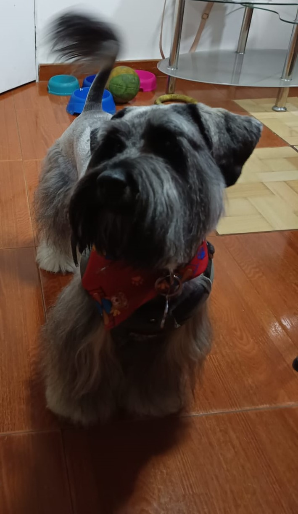

Hoja de Vida de Rocky
Biografía
Schnauzer con 3 años, soy un perro cariñoso y que siempre quiere jugar, soy malgeniado en
mucha de las veces pero es por mi caracter de guardian que tengo en mis instintos, me gusta
ladrar mucho cuando golpean y no me gusta estar solo
¿Qué le gusta a Rocky?
- Me gusta salir a pasear y jugar con la pelota
- Me gusta mucho la pechuga y cualquier carne
- Me gusta viajar con la familia en el auto
¿Qué no le gusta a Rocky?
- No me gustan los remedios
- No me gusta quedarme solo
- No me gusta ruidos fuertes
Foto de Rocky
